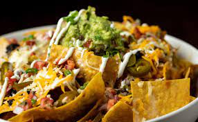

Super Nachos

Description
This makes a huge meal-sized tray of nachos with lots of good stuff! You can adjust ingredient quantities to suit your preference. Serve with extra chips if required. Great for game day.
Ingredients
- Ground beef
- Tortills chips
- Cheddar cheese
Steps
- Set the oven rack about 6 inches from the heat source and preheat the broiler. Line a baking sheet with aluminum foil.
- Broil in the preheated oven until cheese is melted, watching carefully to prevent burning, 3 to 5 minutes.
- Top nachos with salsa, sour cream, black olives, green onions, and jalapeno peppers.